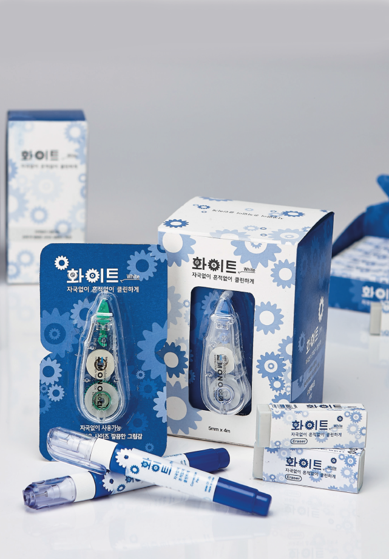
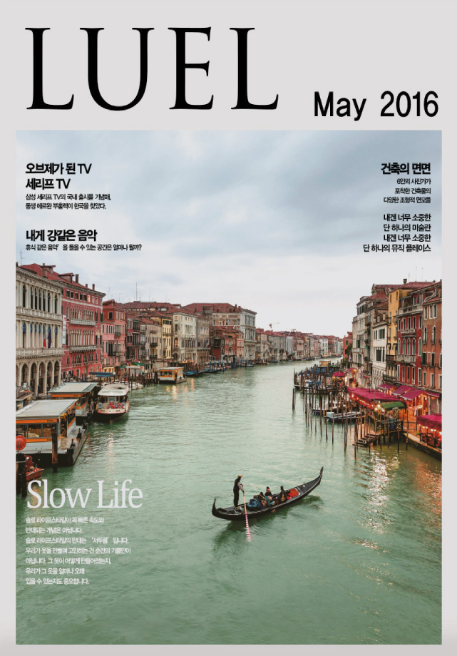
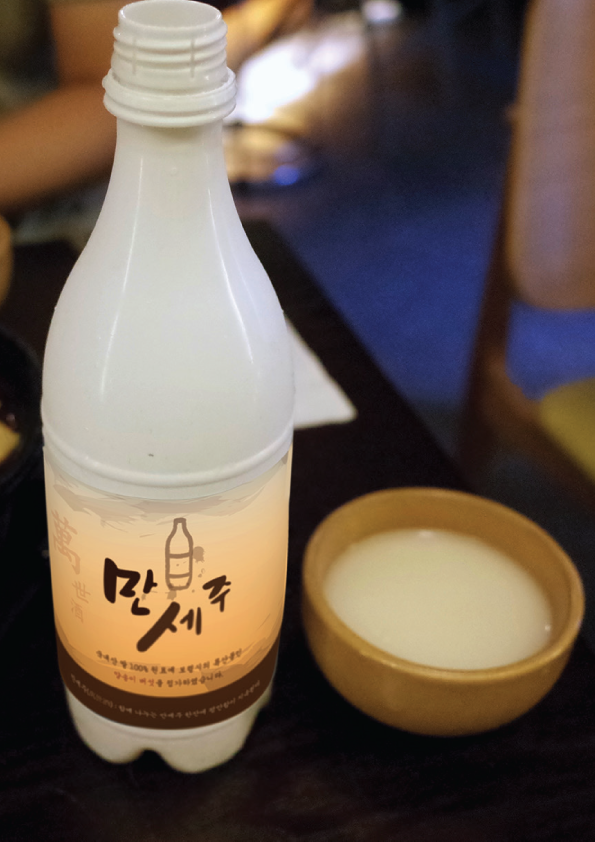
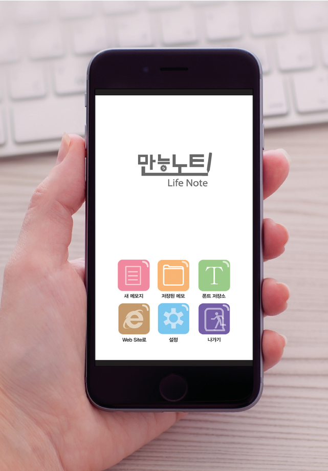

PACKAGE
패키지 디자인, 수정테이프 '화이트'
디자인 컨셉은 수정테이프 안에 있는 부속품으로 톱니바퀴를
이용해 패턴을 만들었고, 서체는 윤고딕 320 및 색상은 수정액과 같은 파란색 색상 계열로 맞췄다.
ADVERTISING
광고디자인 , 코엑스 서울 국제 도서전
코엑스에서 하는 제 22회 서울 국제 도서전 포스터 리디자인이며 영문글자
에 타이포를 넣었고, 날짜 정보, 행사소개의 정보가 들어가 있습니다. 아래 이미지에는 책의 일러스트를 넣어 포스터 다운 느낌을 주었다.

ADITORIAL
에디토리얼 , 잡지 리디자인 LUEL
잡지 하나를 선정을 한 뒤에 새롭게 그리드 시스템 재배치,
타이포그라피 리설정 등 리디자인 하는 컨셉으로 잡았다. 이 잡지(2016년 루엘 4월호)를 선정한 이유는
디자인에 관한 이야기나 먹을거리 등 관심분야가 많아서 선정을 하였다.

MODELING
3D 모델링, 텀블러 디자인
물건 하나를 정해서 비슷하게 리디자인 하는 형식으로 나아갔다.
기존 머그컵의 두배의 크기에 잘린 원뿔형 역삼각형 모양으로 만들었고
뚜껑은 열고 닫을 수 있고 또는 그대로 열려있는 구멍에 따라 마실 수가 있다..

UI / UX
UI / UX , 만능노트 Life Note
이 어플리케이션의 컨셉은 모든 사람들이 편하게 쓸 수 있는 필기장이다,
필기장이면서 메모장인데, 단순한 메모장이 아닌 여러가지 기능들도 포함되어있고 다양한 폰트들, 축약된 포토샵 컨셉으로 만들었다.

LOGO BRAND DESIGN
브랜드디자인 , aldocoffee
동글동글한 서체의 컨셉으로 잡았고 별모양의 심볼을 넣어 만들었으며 색상은 원두색상으로 하였고, 사진의 컵은 어떤 느낌인지 보기 위하여 만들었다.
 Design
Design Art
Art Photo
Photo